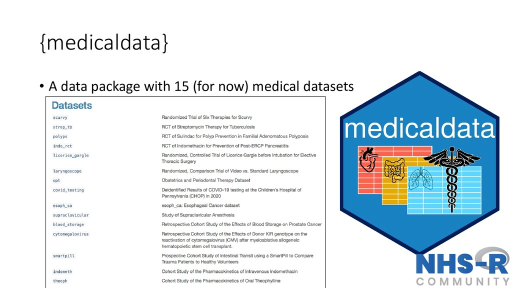

![]()
remotes::install_github("higgi13425/medicaldata")
library(medicaldata)Re-analysing re-constructed published medical data
Quarto
R
Academia
Missing Data
 Hello everybody, today I would like to take the chance of writing in this blog to explore some medical datasets which are publicly available in R, and which I may decide to use in the future for my own teaching or to check some of the methods implemented in such analyses. I think this could be a very interesting exercise to see not only what type of methods are/were used in practice in many clinical studies, but also to check whether I could replicate some of the original analyses and verify the results. This interested was born after checking the medicaldata website, which is a data package with different medical datasets made available for teaching Reproducible Medical Research with R. I think the initiative is quite intriguing, especially since most of the times simulated data are used in teaching. This, per se, is not a problem, but perhaps the chance of having direct access to real medical data that students can look up online through an official article would provide them with more incentives to learn about the need and importance of applying statistical methods for data analysis.
The full list of the available dataset from medicaldata can be found in the linked webpage that I put before, together with current and future development plans for the package, if you are interested. Today, I will start focussing on a specific dataset to see whether some interesting things can be obtained from the re-analyses of the data and whether I might consider incorporating or adapting them in my teaching materials for my courses. They would fit my teaching topics quite well since, most of the times, I teach at medical students/researchers who should be pretty familiar with the context and terminology of these studies.
As a starting point of this re-analysis exercises, I consider the “Streptomycin for Tuberculosis” dataset, whose general description may be found in this online document together with the data codebook for the available variables. I will briefly describe the dataset in the next few lines of text to give the context of the analysis, but you can refer to the above links if you would like to have more detailed information on the study.
Streptomycin for Tuberculosis data
This dataset contains reconstructed records from a prospective, randomised, placebo-controlled two-arm clinical trial published on October 30, 1948 in the British Medical Journal, reported by the Tuberculosis Trials Committee of the Medical Research Council (Crofton and Mitchison 1948). It is often considered the first modern randomised clinical trial ever published. The baseline characteristics and endpoints were re-created for each of the \(107\) young participants with pulmonary tuberculosis, which were randomnly assigned to either streptomycin \(2\) grams daily by mouth (Streptomycin) vs. bed rest (Control) to treat tuberculosis. The trial was helpful to prevent rationing and black market selling of streptomycin, and helped with allocation of limited hospital isolation beds for bedrest therapy (the control arm, and standard of care at the time).
Let’s first install and lead the medicaldata dataset into the R workspace by typing
The dataset is called strep_tb and should be directly available in the R workspace once the package medicaldata is successfully loaded. We can obtain a general summary of the variables available in the dataset, for example, using the command tbl_summary from the gtsummary package.
library(gtsummary)
tbl_summary(strep_tb)| Characteristic | N = 1071 |
|---|---|
| patient_id | 54 (27, 81) |
| arm | |
| Control | 52 (49%) |
| Streptomycin | 55 (51%) |
| dose_strep_g | |
| 0 | 52 (49%) |
| 2 | 55 (51%) |
| dose_PAS_g | |
| 0 | 107 (100%) |
| gender | |
| F | 59 (55%) |
| M | 48 (45%) |
| baseline_condition | |
| 1_Good | 16 (15%) |
| 2_Fair | 37 (35%) |
| 3_Poor | 54 (50%) |
| baseline_temp | |
| 1_<=98.9F/37.2C | 7 (6.5%) |
| 2_99-99.9F/37.3-37.7C | 24 (22%) |
| 2_99-99.9F/37.3-37.7C/37.3-37.7C | 1 (0.9%) |
| 3_100-100.9F/37.8-38.2C | 31 (29%) |
| 3_100-100.9F/37.8-38.2C/37.8-38.2C | 1 (0.9%) |
| 4_>=101F/38.3C | 43 (40%) |
| baseline_esr | |
| 2_11-20 | 5 (4.7%) |
| 3_21-50 | 36 (34%) |
| 4_51+ | 65 (61%) |
| Unknown | 1 |
| baseline_cavitation | 62 (58%) |
| strep_resistance | |
| 1_sens_0-8 | 65 (61%) |
| 2_mod_8-99 | 8 (7.5%) |
| 3_resist_100+ | 34 (32%) |
| radiologic_6m | |
| 1_Death | 18 (17%) |
| 2_Considerable_deterioration | 12 (11%) |
| 3_Moderate_deterioration | 17 (16%) |
| 4_No_change | 5 (4.7%) |
| 5_Moderate_improvement | 23 (21%) |
| 6_Considerable_improvement | 32 (30%) |
| rad_num | |
| 1 | 18 (17%) |
| 2 | 12 (11%) |
| 3 | 17 (16%) |
| 4 | 5 (4.7%) |
| 5 | 23 (21%) |
| 6 | 32 (30%) |
| improved | |
| FALSE | 52 (49%) |
| TRUE | 55 (51%) |
| 1 Median (Q1, Q3); n (%) | |
The variables in Table 1 provide the following information about the study participants:
patient_id: patient identification number.arm: study arm, either “Streptomycin” (\(n_1=52\)) or “Control” (\(n_0=52\)).dose_strep_g: dose of Streptomycin in grams.dose_PAS_g: dose of Para-Amino-Salicylate in grams.gender: gender, either “Male” or “Female”.baseline_condition: Condition of the patient at baseline, either “Good”, “Fair” or “Poor”.baseline_temp: oral temperature at baseline in degrees F, either \((\leq 99.9)\), \((99-99.9)\), \((100-100.9)\) or \((\geq 101)\).baseline_esr: Erythrocyte sedimentation rate at baseline in mm/hour, either \((1-10)\), \((11-20)\), \((21-50)\) or \((51+)\).baseline_cavitation: Cavitation of the lungs on chest X-ray at baseline, either “yes” or “no”.strep_resistance: Resistance to Streptomycin at 6 months follow-up, either “sensitive” \((0-8)\), “moderate” \((8-99)\) or resistant \((100+)\).radiologic_6m: Radiologic outcome at 6 months follow-up, either “death”, “considerable deterioration”, “moderate deterioration”, “no change”, “moderate improvement”, or “considerable improvement”.rad_num: Numeric rating of chest X-ray at 6 months follow-up, ranging between \(1-6\).improved: Dichotomous outcome of whether improvement inrad_numwas recorded, eitherTRUEorFALSE.
Baseline characteristics
A summary of the key baseline characteristics reported in the original article can be obtained as follows.
tbl_summary(strep_tb,
by = arm,
include = c(baseline_condition, baseline_temp, baseline_esr, gender),
statistic = list(
all_continuous() ~ "{mean} ({sd})",
all_categorical() ~ "{n} / {N} ({p}%)"
),
digits = all_continuous() ~ 2,
# label = list(grade = "Tumor Grade"),
missing_text = "(Missing)"
)| Characteristic | Control N = 521 |
Streptomycin N = 551 |
|---|---|---|
| baseline_condition | ||
| 1_Good | 8 / 52 (15%) | 8 / 55 (15%) |
| 2_Fair | 20 / 52 (38%) | 17 / 55 (31%) |
| 3_Poor | 24 / 52 (46%) | 30 / 55 (55%) |
| baseline_temp | ||
| 1_<=98.9F/37.2C | 4 / 52 (7.7%) | 3 / 55 (5.5%) |
| 2_99-99.9F/37.3-37.7C | 12 / 52 (23%) | 12 / 55 (22%) |
| 2_99-99.9F/37.3-37.7C/37.3-37.7C | 0 / 52 (0%) | 1 / 55 (1.8%) |
| 3_100-100.9F/37.8-38.2C | 17 / 52 (33%) | 14 / 55 (25%) |
| 3_100-100.9F/37.8-38.2C/37.8-38.2C | 0 / 52 (0%) | 1 / 55 (1.8%) |
| 4_>=101F/38.3C | 19 / 52 (37%) | 24 / 55 (44%) |
| baseline_esr | ||
| 2_11-20 | 2 / 51 (3.9%) | 3 / 55 (5.5%) |
| 3_21-50 | 20 / 51 (39%) | 16 / 55 (29%) |
| 4_51+ | 29 / 51 (57%) | 36 / 55 (65%) |
| (Missing) | 1 | 0 |
| gender | ||
| F | 28 / 52 (54%) | 31 / 55 (56%) |
| M | 24 / 52 (46%) | 24 / 55 (44%) |
| 1 n / N (%) | ||
Table 2 shows that, in the Control group, about \(46\%\) participants were associated with a poor baseline condition, \(36\%\) had a maximum temperature of \(101^{\circ}\) F, and \(56\%\) had a sedimentation rate \(>50\); conversely, in the Streptomycin group, the corresponding percentages were \(54\%\), \(44\%\), and \(65\%\), respectively. Overall, the authors conclude that these characteristics reflected the fairly acute clinical condition of most of the study patients and that baseline differences between study arms were not strong enough to suggest a break in the randomisation procedure.
X-ray classification
Table 3 reports summary statistics by study arm about baseline_cavitation based on X-ray films data, which show how about \(58\%\) in both arms were associated with large or multiple cavities in the film taken on admission.
tbl_summary(strep_tb,
by = arm,
include = c(baseline_cavitation),
statistic = list(
all_continuous() ~ "{mean} ({sd})",
all_categorical() ~ "{n} / {N} ({p}%)"
),
digits = all_continuous() ~ 2,
# label = list(grade = "Tumor Grade"),
missing_text = "(Missing)"
)| Characteristic | Control N = 521 |
Streptomycin N = 551 |
|---|---|---|
| baseline_cavitation | 30 / 52 (58%) | 32 / 55 (58%) |
| 1 n / N (%) | ||
Results at 6 months follow-up
Table 4 reports the numbers and proportions of patients associated with different value of radiologic_6m, separately displayed by study arm.
tbl_summary(strep_tb,
by = arm,
include = c(radiologic_6m),
statistic = list(
all_continuous() ~ "{mean} ({sd})",
all_categorical() ~ "{n} / {N} ({p}%)"
),
digits = all_continuous() ~ 2,
# label = list(grade = "Tumor Grade"),
missing_text = "(Missing)"
)| Characteristic | Control N = 521 |
Streptomycin N = 551 |
|---|---|---|
| radiologic_6m | ||
| 1_Death | 14 / 52 (27%) | 4 / 55 (7.3%) |
| 2_Considerable_deterioration | 6 / 52 (12%) | 6 / 55 (11%) |
| 3_Moderate_deterioration | 12 / 52 (23%) | 5 / 55 (9.1%) |
| 4_No_change | 3 / 52 (5.8%) | 2 / 55 (3.6%) |
| 5_Moderate_improvement | 13 / 52 (25%) | 10 / 55 (18%) |
| 6_Considerable_improvement | 4 / 52 (7.7%) | 28 / 55 (51%) |
| 1 n / N (%) | ||
A key result which the authors highlight is considerable difference in the death rate between Control (\(27\%\)) and Streptomycin (\(7\%\)). They also claim it to be statistically significant, which we can easily verify using, for example, a simple \(\chi^2\) test.
strep_tb$death <- ifelse(strep_tb$radiologic_6m=="1_Death",1,0)
death_diff <- chisq.test(strep_tb$death,strep_tb$arm, correct = FALSE)
death_diff
Pearson's Chi-squared test
data: strep_tb$death and strep_tb$arm
X-squared = 7.3761, df = 1, p-value = 0.00661The test statistic, computed without any correction method (since no expected cell counts were below \(5\)), is 7.38 with a p-value of 0.0066. In R, we may alternatively use a simple Z-test for the difference between two proportions.
n0 <- nrow(strep_tb[strep_tb$arm=="Control",])
n1 <- nrow(strep_tb[strep_tb$arm=="Streptomycin",])
n0_dead <- nrow(strep_tb[strep_tb$arm=="Control" & strep_tb$radiologic_6m=="1_Death",])
n1_dead <- nrow(strep_tb[strep_tb$arm=="Streptomycin" & strep_tb$radiologic_6m=="1_Death",])
prop.test(x = c(n0_dead, n1_dead), n = c(n0, n1), correct = FALSE)
2-sample test for equality of proportions without continuity correction
data: c(n0_dead, n1_dead) out of c(n0, n1)
X-squared = 7.3761, df = 1, p-value = 0.00661
alternative hypothesis: two.sided
95 percent confidence interval:
0.05777855 0.33522844
sample estimates:
prop 1 prop 2
0.26923077 0.07272727 which returns exactly the same result in terms of test statistic and p-value. The authors clarify that an assessment of the condition at the end of the six-months period should be based on a judicious combination of changes in the radiological picture, changes in general condition, temperature, weight, sedimentation rate, and bacillary content of the sputum. To partly address this, they performed a preliminary analysis based on changes in the radiological picture alone, this being in their opinion the most important single factor to consider. The overall results given in Table 4 show differences in the two series that support this argument, especially with respect to the numbers related to a “considerable improvement” in the radiological picture, i.e. those for whom at the end of the six-months period there was a reasonable prospect of recovery. Indeed, a total of \(51\%\) of the Streptomycin patients were considerably improved, compared with only \(\8%\) of the Control patients. Again, we can check the statistical significance related to this comparison as we did before, for example by doing
strep_tb$cons_impr <- ifelse(strep_tb$radiologic_6m=="6_Considerable_improvement",1,0)
cons_impr_diff <- chisq.test(strep_tb$cons_impr,strep_tb$arm, correct = FALSE)
cons_impr_diff
Pearson's Chi-squared test
data: strep_tb$cons_impr and strep_tb$arm
X-squared = 23.815, df = 1, p-value = 1.061e-06They also state that results were comparable between genders, for which no statistical association with death was found. We can again check this by checking the pairwise associations between gender and arm
gender_arm <- chisq.test(strep_tb$gender,strep_tb$arm, correct = FALSE)
gender_arm
Pearson's Chi-squared test
data: strep_tb$gender and strep_tb$arm
X-squared = 0.068484, df = 1, p-value = 0.7936and between gender and death
gender_death <- chisq.test(strep_tb$gender,strep_tb$death, correct = FALSE)
gender_death
Pearson's Chi-squared test
data: strep_tb$gender and strep_tb$death
X-squared = 1.1623, df = 1, p-value = 0.281As it can be seen, no statistically significant association is detected between gender and any of the other two variables.
Finally, we may think to assess the association between death and arm while also accounting for possible baseline differences in the available baseline variables in strep_tb, which the authors considered to be important for assessing these results, namely baseline_condition, baseline_temp and baseline_esr. We can do this, for example, by means of a logistic regression
death_lr <- glm(death ~ arm + baseline_condition + baseline_temp + baseline_esr,
family=binomial(link='logit'), data = strep_tb)
summary(death_lr)
Call:
glm(formula = death ~ arm + baseline_condition + baseline_temp +
baseline_esr, family = binomial(link = "logit"), data = strep_tb)
Coefficients:
Estimate Std. Error z value
(Intercept) -1.992e+01 8.661e+03 -0.002
armStreptomycin -2.141e+00 7.038e-01 -3.041
baseline_condition2_Fair -3.912e-01 6.329e+03 0.000
baseline_condition3_Poor 1.964e+01 7.928e+03 0.002
baseline_temp2_99-99.9F/37.3-37.7C -3.481e-01 7.513e+03 0.000
baseline_temp2_99-99.9F/37.3-37.7C/37.3-37.7C 1.846e+00 1.941e+04 0.000
baseline_temp3_100-100.9F/37.8-38.2C 6.065e-01 7.513e+03 0.000
baseline_temp3_100-100.9F/37.8-38.2C/37.8-38.2C -1.834e+01 1.926e+04 -0.001
baseline_temp4_>=101F/38.3C 3.688e-01 7.513e+03 0.000
baseline_esr3_21-50 3.608e-02 8.655e+03 0.000
baseline_esr4_51+ 1.880e-01 1.042e+04 0.000
Pr(>|z|)
(Intercept) 0.99817
armStreptomycin 0.00236 **
baseline_condition2_Fair 0.99995
baseline_condition3_Poor 0.99802
baseline_temp2_99-99.9F/37.3-37.7C 0.99996
baseline_temp2_99-99.9F/37.3-37.7C/37.3-37.7C 0.99992
baseline_temp3_100-100.9F/37.8-38.2C 0.99994
baseline_temp3_100-100.9F/37.8-38.2C/37.8-38.2C 0.99924
baseline_temp4_>=101F/38.3C 0.99996
baseline_esr3_21-50 1.00000
baseline_esr4_51+ 0.99999
---
Signif. codes: 0 '***' 0.001 '**' 0.01 '*' 0.05 '.' 0.1 ' ' 1
(Dispersion parameter for binomial family taken to be 1)
Null deviance: 93.343 on 105 degrees of freedom
Residual deviance: 54.268 on 95 degrees of freedom
(1 observation deleted due to missingness)
AIC: 76.268
Number of Fisher Scoring iterations: 19As it can be seen, results for the coefficient associated with arm remain statistically significant, even after accounting for the different baseline variables included in the model. If we want to look at more interpretable results, we can re-scale the coefficient estimates on the exponential scale so to look at the odds ratios instead of their logarithmic value
exp(death_lr$coefficients) (Intercept)
2.241304e-09
armStreptomycin
1.175855e-01
baseline_condition2_Fair
6.762262e-01
baseline_condition3_Poor
3.398978e+08
baseline_temp2_99-99.9F/37.3-37.7C
7.060602e-01
baseline_temp2_99-99.9F/37.3-37.7C/37.3-37.7C
6.333637e+00
baseline_temp3_100-100.9F/37.8-38.2C
1.833964e+00
baseline_temp3_100-100.9F/37.8-38.2C/37.8-38.2C
1.082473e-08
baseline_temp4_>=101F/38.3C
1.445926e+00
baseline_esr3_21-50
1.036741e+00
baseline_esr4_51+
1.206841e+00 We can also do the same to look at the corresponding \(95\%\) confidence intervals related to the regression coefficients
death_lr_ci <- confint(death_lr, level = 0.95)
exp(death_lr_ci) 2.5 % 97.5 %
(Intercept) 1.214625e-116 8.313032e+91
armStreptomycin 2.601219e-02 4.320193e-01
baseline_condition2_Fair 5.643470e-72 5.637495e+73
baseline_condition3_Poor 6.560806e-71 9.555863e+83
baseline_temp2_99-99.9F/37.3-37.7C 3.428699e-82 5.658153e+88
baseline_temp2_99-99.9F/37.3-37.7C/37.3-37.7C 5.244377e-267 7.649138e+267
baseline_temp3_100-100.9F/37.8-38.2C 7.673207e-104 4.383334e+103
baseline_temp3_100-100.9F/37.8-38.2C/37.8-38.2C 2.388473e-260 3.440642e+235
baseline_temp4_>=101F/38.3C 6.111917e-100 1.077696e+97
baseline_esr3_21-50 2.603533e-112 3.145746e+114
baseline_esr4_51+ 1.516345e-147 3.535574e+145So, what do you think? I think it is pretty nice to do these types of analyses using data from real studies. I believe this is much more interesting for students to look at, and it also gives us some information about the methods used by the original analysts and (perhaps) possible ways to do the analyses in a different way based on today’s knowledge and approaches. I hope to be able to incorporate these examples in my teaching, although I will need to find the time to do it!
References
Crofton, John, and DA Mitchison. 1948. “Streptomycin Resistance in Pulmonary Tuberculosis.” British Medical Journal 2 (4588): 1009.